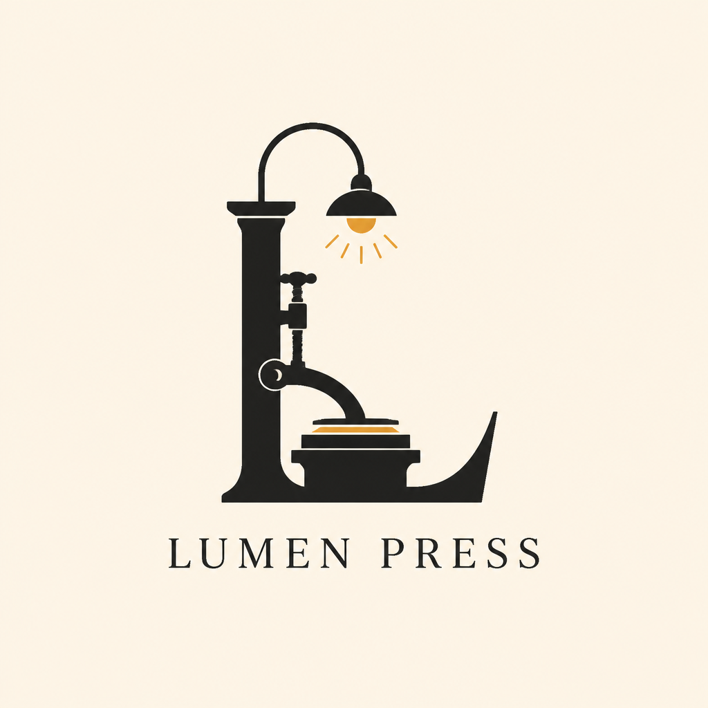
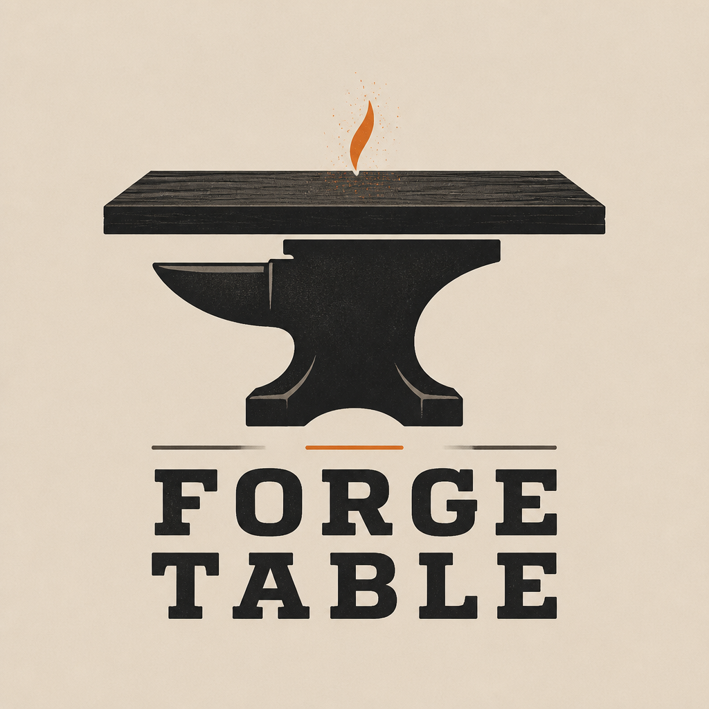

Pass HS · Survey · Hour 1 · Cycle HS→… OPEN
Five brands. One spectrum. Survey opens on rock.
Hour 1 Surveys GenUI as a spectrum — Chat Components for irreversible stakes,
Component Systems for boards, never Open-ended for allergen or hold truth.
Contract ratchet fences the catalog. Two cafes, two restaurants, one independent
sneaker vault for collectible Nike pairs — PR seal only.
Pass HS · Survey · spectrum match thesis
H1 Survey Spectrum Match · Chat / Component / Embedded by surfaceH2 Deepen (next) Contract ratchet · exampleData pedagogyH3 Crosslink (queued) Six bridges Design↔Craft↔Bible↔Writing↔Art↔PrinciplesH4 Practice (queued) Joint stamps before Reserve/HoldH5 Integrate (queued) Fold spine · seal cycle
Survey HS fruit · match pattern by surface
Chat Components Stakes · A+I+L · 24h hold · allergen/flame — highest controlComponent Systems Menu boards · vault rows — schema-fenced fillEmbedded GenUI Exploratory mood boards only — never for irreversible stakes
Prior Ri bridges retained as Survey memory
Design↔Craft Catalog Contract = guild markCraft↔Bible Seal before promise = hear-do rockBible↔Writing Two Ways = A+I+L plainWriting↔Art Stakes narrate · place creditsArt↔Design Brand-survives-nav · envelope≠fillPrinciples↔Bible BREAK burial = refuse Way of Death
Canon shelves · labeled, never SKU-pasted
Protestant 66
Catholic 73 · deuterocanon
Orthodox LXX broader OT
Ethiopian ~81 · Enoch · Jubilees · Meqabyan
Peshitta NT history
Didache · Two Ways companion
Pass HS · Survey checklist · deepen later
J1 Design Spectrum Match · Patterns 2+4+5+7J2 Principles BREAK burial · KEEP Fitts+envelopeJ3 Art Place credit · brand-survives-navJ4 Writing A+I+L · Imagist heroesJ5 Bible Hear-do rock · Two Ways · labeled canonsJ6 Craft Shu survey · seal before ship

Lumen Press
Cafe · letterpress loft · soy-ink stakes
Cedar Drift
Cafe · mist grove · tree-nut clarity
Salt Loom
Restaurant · harbor terrace · shellfish critical

Forge Table
Restaurant · open flame · ember craft
Pair Registry
Sneaker boutique · collectible vault · PR seal only